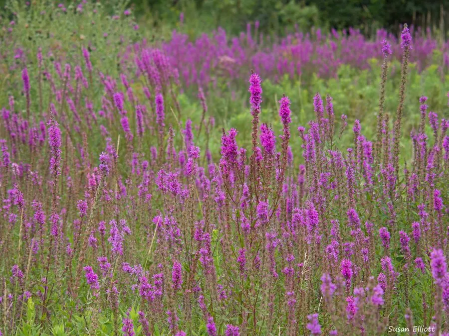

水生植物 · 植物界
千屈菜 Lythrum salicaria

千屈菜科多年生湿生草本，穗状花序紫红、花期长，生于水边湿地，原产欧亚，在北美逸生后成为入侵植物。
- 分类
- 门被子植物门纲木兰纲目桃金娘目科千屈菜科属千屈菜属
- 栖息环境
- 水边、沼泽、湿草甸及浅水处，喜光、耐湿
- 地理分布
- 原产欧亚大陆，中国各地水边常见；北美等地为入侵植物
- 保护级别
- 暂无评估；在北美等地为入侵植物
物种志
千屈菜为千屈菜科千屈菜属多年生湿生草本，株高 0.8–1.5 米，茎直立，多分枝，四棱形。叶片披针形，对生或轮生，全缘。穗状花序顶生，花紫红色，花瓣 6 枚，花期 6–9 月；果实为蒴果。
千屈菜原产欧亚大陆，中国各地水边、沼泽和湿草甸常见，喜阳光充足、湿润的环境，耐寒耐湿，常成片生长。它花序细长、花色紫红，花期长，是水岸和湿地绿化的常用植物。千屈菜全草可入药，有清热解毒之效；但它被引入北美后大量繁殖，挤占本土湿地植物，被列为入侵植物，栽培时应注意控制其扩散，并通过花后修剪防止种子大量散播，避免逸生到附近的自然湿地。
形态与习性
- 株高0.8–1.5 米，茎四棱形
- 花期6–9 月，穗状花序紫红
- 果期花后结蒴果
- 光照喜充足阳光
- 水分湿地或浅水，水深 0–20 厘米
- 土壤肥沃湿润的壤土或沼泽土
- 繁殖分株、扦插或播种
- 主要用途水岸湿地绿化、全草入药
趣味知识
- 千屈菜的穗状花序紫红夺目，花期可长达两三个月。
- 它喜湿耐寒，常成片生长在水边和沼泽中。
- 千屈菜被引入北美后大量繁殖，挤占本土湿地植物，被列为入侵植物。
- 全草可入药，有清热解毒之效，但应在医生指导下使用。